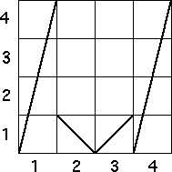
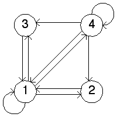
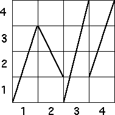
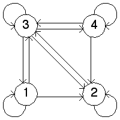
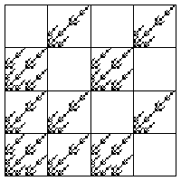
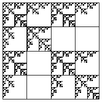

| 2. (a) (i) On the right is the transition graph for the function on the left. |
| From the graph we see the forbidden transitions are |
|   |
| (ii) On the right is the transition graph for the function on the left. |
| From the graph we see the forbidden transitions are |
|   |
| (b) (i) Here is the fractal generated by this transition graph. |
|  |
| (ii) Here is the fractal generated by this transition graph. |
|  |
Return to Homework 8 Practice.